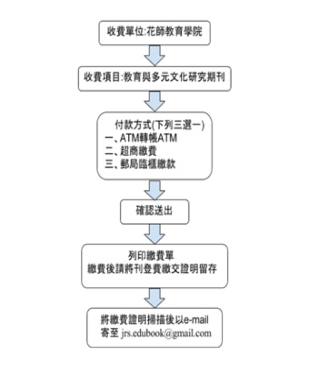

台灣已正式邁入民主、多元、開放的新時代。教育的理論與實務也須呼應這個社會趨勢，與時並進。為促進教育學術交流，提供「教育」與「多元文化」研究之發表園地，特發行「教育與多元文化研究期刊」（以下簡稱本期刊），建構一個教育與多元文化專業社群的對話平台。
稿件內容須符合本期刊宗旨，並涵蓋以下範圍：
一、教育與多元文化研究之理論與實務
二、教育與多元文化研究之趨勢與議題
三、多元文化相關議題
| 一、 | 本期刊優先徵求原創性論文，請勿一稿二投。稿件如係科技部或其他機關委託之研究成果，應屬無版權爭議或事先取得委託單位之同意，始受理審稿。學術研討會論文若僅有摘要彙編出刊，或含正文且彙訂成冊，但只供開會使用，會後並未出刊發行者，亦可受理審稿。 |
|---|---|
| 二、 | 本期刊採隨到隨審制。經審查通過之論文，其刊載卷期以審查通過時間為原則；惟本刊編輯必要時得視當期主題調整之。 |
| 三、 | 來稿中、英文不拘，但不論中英文稿件均須包括中文標題、中文摘要與關鍵詞、正文、英文標題、英文摘要與關鍵詞、參考文獻，必要時另增註解、圖表與附錄。惟投稿中文稿件者，中文標題、中文摘要與關鍵詞置於全文之最前；其英文標題、英文摘要與關鍵詞置於中文摘要之後。投稿英文稿件者，英文標題、英文摘要與關鍵詞置於全文之最前；其中文標題、中文摘要與關鍵詞置於英文摘要之後。 此外，為符合匿名審查原則作業，請勿於稿件中標出作者及服務單位；若正文、註解或附錄有明顯出現與作者身份相關之任何資料，本期刊編輯小組將逕予刪除，刊登時則恢復之。 |
| 四、 | 中文稿件字數以20,000字以內為原則；英文稿件字數以10,000字以內為原則（以上兩者字數之計算均包含圖表、參考文獻、附錄等）。中文摘要以500字、英文摘要以300字為限，並依APA（第六版）格式撰寫 。 |
| 五、 | 投稿時，請逕至以下網址（http://jrs.edubook.com.tw/JEMR/）註冊登入，並使用線上投稿系統。此外，為符合匿名審查原則作業，請勿於稿件中標出作者及服務單位；若正文、註解或附錄有明顯出現與作者身份相關之任何資料（引用自己的資料，不在此限）；或稿件字數、內容不符合本期刊要求者，本期刊編輯小組將逕予「形式審查不通過」退稿。 |
| 六、 | 通過審查之文章作者須簽署「國立東華大學〈教育與多元文化研究期刊〉稿件著作權授權書」，並於出刊前將授權書寄至本刊編輯部(e-mail: jrs.edubook@gmail.com)。如經審核通過，授權全文上網並進行數位化、重製等加值流程後收錄於資料庫，以電子形式透過單機、網際網路、無線網路或其他公開傳輸方式，提供用戶進行檢索、瀏覽、下載、傳輸、列印等。 |
| 七、 | 來稿請使用Microsoft Word 97以上之繁體中文文書軟體處理，並以單行間距之12號新細明體或Times New Roman 字體橫向列印於A4規格紙張，稿件上下各留2.54公分空白；左右兩側各留3.17公分空白。 |
| 八、 | 刊登之論文著作財產權歸國立東華大學所有，文責由作者自負。刊登後不另致稿酬，惟本期刊將寄送當期期刊3本予主要作者（寄送份數以論文篇數為計算單位）。 |
| 九、 | 請以線上投稿系統進行投稿與修正。若審查通過後，依審查意見修改後之定稿則務必分別於中、英文標題下補寫中、英文作者姓名及服務單位，並將電子檔（word檔）寄回編輯小組。 |
| 十、 | 經審查錄取之稿件，由主要作者擔任排版後的校對工作；除校對外，亦可做小幅度的修訂。 |
| 十一、 | 本期刊自2018年01月01日起，凡文章經審查程序而被接受刊登之作者依研究專長均需無償審查文章一篇，本刊會發予感謝狀乙幀。 |
本期刊採雙向匿名審查制度，每篇稿件由本期刊編輯部進行初審通過後，由總編輯或領域編輯推薦相關領域學者至少二人審查之。
本期刊自2018年01月01日起，凡接受刊登之文章，每篇需繳交刊登費新臺幣貳仟元整，請依以下方式繳費，未完成手續者將延期刊登；已繳費者，恕不退費。
請於國立東華大學線上繳費系統進行繳費單列印（http://web.ndhu.edu.tw/ga/onlinepay/pay.aspx）。
請於接獲刊登通知後，完成繳費，並將刊登費繳費證明掃描，掃描後電子檔以e-mail寄至jrs.edubook@gmail.com。
